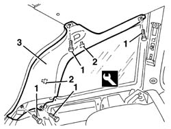

7040H62 rear window surround trim one lh or rh r r
- Path
- Procedures > 70 FITTINGS > 7040 BODYSHELL INTERIOR TRIMS AND FITTINGS > 7040H roof panel lining > 7040H62 rear window surround trim one lh or rh r r
- Kind
- repair procedure (removal / refitting; the operation number is the code)
- Applies to
- all engines; all production periods
- Interactive page
- https://sloeber94.github.io/elrnDB-a156/en/#/3238845
Applies to: all engines; all production periods; only with equipment: Station Wagon
 Removing
Removing
 Refitting
Refitting7040B22 luggage compartment/load platform moulding - r+r
7040B15 (One), rear side trim mounting BRACKET left or right - R.R .
7040B28 PET transport PROTECTION and load carrying compartment COVER COMBINATION BLIND - R.R.
- 7040L44 rear compartment scuff strip - r r
7050A47 SIDE PANEL (one) for rear seat BACKREST., left or right - R.R .
7040B30 l/h or r/h side support (one) for load platform cover blind - arrange
7040H42 rear pillar trim - r r
7040H12 Roof panel REAR TRIM - R.R.
1. Unscrew the trim retaining bolts.
2. Release the inner retainers using the special tool.
 | Name | Country |
|---|---|---|
2 | Scraper blade | 1.823.015.000 |
3. Save the trim.

Applies to: all engines; all production periods; only with equipment: Station Wagon
Refitting
RemovingCheck that the trim is undamaged.
Position the trim and do up the inner retainers.
Tighten the trim retaining bolts.
7040H12 Roof panel REAR TRIM - R.R.
7040H42 rear pillar trim - r r
7040B30 l/h or r/h side support (one) for load platform cover blind - arrange
7050A47 SIDE PANEL (one) for rear seat BACKREST., left or right - R.R .
- 7040L44 rear compartment scuff strip - r r
7040B28 PET transport PROTECTION and load carrying compartment COVER COMBINATION BLIND - R.R.
7040B15 (One), rear side trim mounting BRACKET left or right - R.R .
Topics linked from this page (7)
- 7040B15 (One), rear side trim mounting BRACKET left or right - R.R .
- 7040B22 luggage compartment/load platform moulding - r+r
- 7040B28 PET transport PROTECTION and load carrying compartment COVER COMBINATION BLIND - R.R.
- 7040B30 l/h or r/h side support (one) for load platform cover blind - arrange
- 7040H12 Roof panel REAR TRIM - R.R.
- 7040H42 rear pillar trim - r r
- 7050A47 SIDE PANEL (one) for rear seat BACKREST., left or right - R.R .